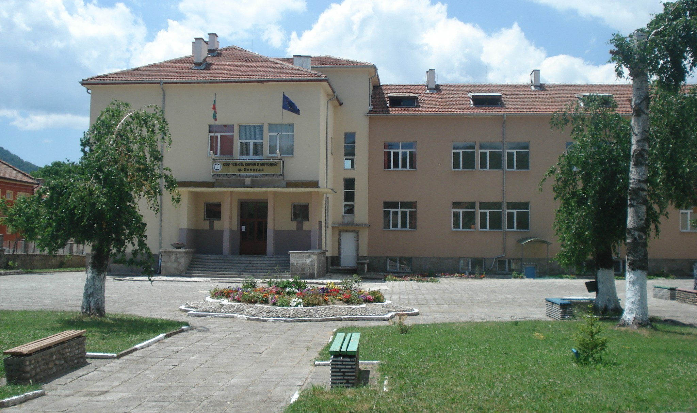

Добре дошли в моето професионално портфолио.
Тук представям уроци, приложения, проекти и планове за работа.

Месторабота: Средно училище "Свети свети Кирил и Методий", град Якоруда
Педагогически стаж: 11 години и 8 месеца
От 09/09/2020 година до настоящия момент - Учител по информатика и информационни технологии в СУ "Св. св. Кирил и Методий", град Якоруда
От 09/10/2015 година до 09/09/2020 година - Обществен възпитател към МКБППМН - осъществяване на индивидуална и групова възпитателна работа с деца и ученици в риск, подкрепа за личностното развитие на подрастащите.
2014 година - ДДЛРГ„Асен Златаров“ - работа с деца, лишени от родителска грижа, подпомагане на социалната адаптация и емоционалното развитие на децата.